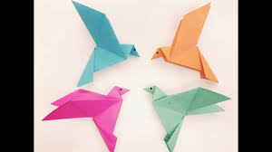
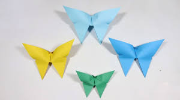

~Wild Oragami~
Oragami Instructions and diagrams
Dragon =>
Bird =>

Butterfly =>

Some Interesting facts about a dragon!
A dragon has: none to four legs, claws, scales and possibly spikes.
A dragon can look like a snake with wings, or like lizards.
A dragon has a tail and a long neck.
A dragon has a wide mouth with big and dangerous teeth.
Sometimes they have horns and hair.
A dragon can fly.
Some Interesting facts about a bird!
A flamingo can eat only when its head is upside down.
Birds originally descended from reptiles.
The robin was voted the UK’s most popular wild bird.
The largest living bird in the world is the Ostrich.
The smallest living bird in the world is the Hummingbird.
The only known poisonous bird in the world is the Hooded Pitohui of Papua.
Some Interesting facts about a Butterflies!
Butterfly Wings Are Transparent.
Butterflies Taste With Their Feet.
Butterflies Live on an All-Liquid Diet.
A Butterfly Must Assemble Its Own Proboscis-Quickly.
Butterflies Drink From Mud Puddles.
Butterflies Can't Fly If They're Cold.